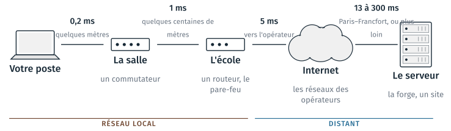
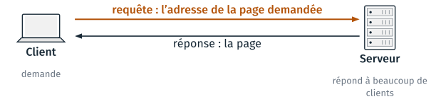
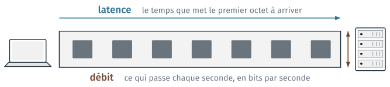
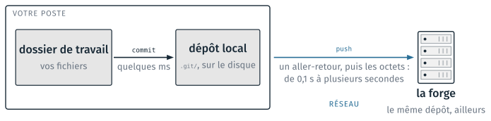

Le réseau#
Cette partie suit le trajet des données entre un poste et un serveur, puis présente le modèle client et serveur, et ce qu’il faut pour joindre un serveur : son adresse, son nom et un port. Elle distingue ensuite deux grandeurs, la latence et le débit, et donne leurs valeurs selon la distance et le lien, sans-fil compris. Elle se termine par ce qui sépare un commit d’un push. Le TD 5a l’accompagne ; il est présenté en fin de page.
Local et distant#
Entre un poste et un serveur, les données traversent une suite de liens. Chaque lien ajoute du temps, et la distance en ajoute le plus.

Du poste au serveur : les liens traversés et le temps d’un aller-retour sur chacun.#
Le réseau local est celui de l’école, jusqu’au pare-feu. Au-delà, les données passent par les réseaux des opérateurs, puis arrivent au serveur. GitHub a ses serveurs aux États-Unis, avec des relais en Europe. Les temps indiqués sont des allers-retours, et ils s’additionnent : moins de 1 ms dans la salle, des dizaines de millisecondes jusqu’au serveur.
Client et serveur#
Un client envoie une requête à un serveur, et le serveur lui répond. Un serveur répond à beaucoup de clients à la fois.

Une requête du client, une réponse du serveur.#
Client |
Serveur |
Contenu de la requête |
|---|---|---|
le navigateur |
le site web |
l’adresse de la page demandée |
|
la forge |
les nouveaux commits |
|
un serveur de calcul |
l’ouverture d’un terminal |
Le cours 6 ajoute git pull, qui demande à la forge les commits des autres.
Client et serveur sur le même poste#
Le client et le serveur sont deux programmes. Ils peuvent tourner sur le même poste : JupyterLab fonctionne ainsi.

Le client et le serveur d’un notebook, sur la même machine (schéma du cours 1).#
La commande jupyter lab, lancée dans un terminal, démarre le serveur. Le
terminal affiche l’adresse http://localhost:8888/lab?token=… et reste
occupé tant que le serveur tourne. Le navigateur est le client : il se
connecte à cette adresse. À chaque cellule exécutée, le terminal affiche une
ligne, une par requête reçue. Si l’on ferme le terminal, le serveur s’arrête :
le navigateur reste ouvert, et signale à la cellule suivante que le serveur ne
répond plus.
localhost est le nom du poste pour lui-même, d’adresse 127.0.0.1, et 8888
est le port du serveur : les échanges ne sortent pas du poste. Le jeton
(token) de l’adresse est un mot de passe à usage unique ; sans lui, un autre
poste du réseau ne peut pas exécuter de code sur ce serveur. La partie
Prouver qui l’on est revient sur les mots de
passe.
Adresse, nom et port#
Pour joindre un serveur, il faut son adresse, et savoir à quel service on s’adresse sur cette machine.
Élément |
Exemple |
Rôle |
|---|---|---|
adresse IP |
|
le numéro de la machine sur le réseau |
nom de domaine |
|
le nom lisible par une personne ; le DNS le traduit en adresse IP |
port |
|
le service visé sur la machine : le web, SSH |
protocole |
|
les règles d’échange sur ce port |
Dans une adresse web comme https://github.com/alice/projet, ou dans une
commande comme ssh alice@calcul.ecole.fr, le nom de domaine est
github.com ou calcul.ecole.fr : il identifie le serveur.
Le DNS (Domain Name System) est un annuaire, qui associe un nom de domaine à une adresse IP. La requête DNS est faite une fois ; la réponse est gardée en mémoire. Le port 443 sert au web chiffré (HTTPS), le port 22 à SSH. Un pare-feu peut fermer le port 22 en sortie ; le cours 6 donne la marche à suivre dans ce cas. Savoir lire le nom de domaine d’une adresse sert aussi à reconnaître l’hameçonnage, présenté dans la partie suivante.
Débit et latence#
Deux grandeurs indépendantes décrivent un lien. La latence est le temps que met le premier octet à arriver. Le débit est le nombre de bits qui arrivent chaque seconde.

La latence et le débit d’un lien.#
Le temps d’un transfert vaut la latence plus la taille divisée par le débit.
temps = latence + taille ÷ débit |
1 Ko sur une fibre à 1 Gbit/s |
1 Go sur la même fibre |
|---|---|---|
Paris – New York, 75 ms |
75 ms + 0,008 ms : la latence seule compte |
75 ms + 8 s : le débit seul compte |
Pour un petit message, seule la latence compte ; pour un gros fichier, seul
le débit compte. Un git push ordinaire envoie quelques Ko : l’attente vient
des allers-retours.
La latence dépend de la distance#
Dans une fibre optique, la lumière parcourt 200 000 km par seconde. Un aller-retour ne peut pas durer moins longtemps que ce trajet.
Depuis Paris, vers |
Distance |
Aller-retour mesuré |
Part de la vitesse de la lumière |
|---|---|---|---|
Londres |
341 km |
7 ms |
49 % |
Marseille |
662 km |
13 ms |
55 % |
New York |
5 812 km |
75 ms |
77 % |
Johannesburg |
8 732 km |
155 ms |
57 % |
Tokyo |
9 717 km |
242 ms |
40 % |
Sydney |
16 964 km |
267 ms |
64 % |
Les allers-retours sont des moyennes mesurées entre serveurs par wondernetwork.com, en septembre 2026. La dernière colonne compare au temps qu’aurait mis la lumière dans une fibre tendue en ligne droite. Un aller-retour entre Paris et Sydney ne descendra pas sous 170 ms, le temps de la lumière dans la fibre sur ce trajet. Les gains possibles portent sur les détours des câbles et sur les équipements traversés. Les grands services ont des serveurs sur chaque continent pour cette raison.
Le débit dépend du lien#
Le lien le plus lent du trajet fixe le débit. Le plus souvent, il s’agit du dernier lien : le Wi-Fi ou la 4G.
Lien |
Débit courant |
Transférer 1 Go |
|---|---|---|
Ethernet de la salle, câble |
1 Gbit/s |
8 s |
Fibre à domicile |
300 Mbit/s à 1 Gbit/s |
8 à 27 s |
Wi-Fi |
50 à 300 Mbit/s |
27 s à 3 min |
4G |
10 à 50 Mbit/s |
3 à 13 min |
ADSL |
10 Mbit/s |
13 min |
Ces débits sont ceux observés en pratique. Le TD 5a en mesure un depuis la salle.
Avertissement
Les débits sont donnés en bits par seconde, et la taille des fichiers en octets. Un octet vaut 8 bits : 1 Gbit/s transfère 125 Mo par seconde. Les opérateurs donnent les débits en bits par seconde, et l’oubli de ce facteur 8 est l’erreur la plus fréquente.
Le sans-fil#
Portée, débit, latence et consommation changent d’une technologie sans fil à l’autre.
Lien |
Portée |
Débit |
Latence |
Sert à |
|---|---|---|---|---|
Bluetooth |
10 m |
1 à 2 Mbit/s |
10 ms |
écouteurs, capteurs |
Wi-Fi |
10 à 50 m |
100 à 1 000 Mbit/s, partagés |
2 à 10 ms |
la salle, la maison |
4G ; 5G |
1 à 10 km |
10 à 100 ; 100 à 1 000 Mbit/s |
40 ms ; 15 ms |
le terrain : RTK, cartes |
LoRa |
2 à 15 km |
0,3 à 50 kbit/s |
secondes |
un capteur, des années de pile |
GNSS |
satellites, 20 000 km |
50 bit/s, réception seule |
se positionner |
Une onde est partagée : le débit du Wi-Fi se divise entre les postes connectés. Les postes de la salle sont câblés pour cette raison.
Une onde s’écoute : sans chiffrement, toute personne à portée lit ce qui passe. Le chiffrement du Wi-Fi (WPA) protège contre les personnes à portée. HTTPS et SSH chiffrent sur tout le trajet, opérateur compris. La partie suivante y revient, avec l’interception d’un mot de passe.
Un récepteur GNSS écoute les satellites et calcule sa position ; il n’émet rien. Le message de navigation passe à 50 bit/s, et une première position à froid prend 30 s. Sur le terrain, les corrections RTK arrivent par la 4G. Un capteur LoRa envoie par exemple un relevé par heure, avec une pile qui dure cinq ans.
Un commit et un push#
Un commit écrit sur le disque du poste ; un push traverse le réseau. Git permet ainsi de travailler sans réseau, et de pousser les commits plus tard.

Le commit reste sur le poste ; le push envoie les commits à la forge.#
Un outil qui enregistrerait directement sur le serveur attendrait le réseau à
chaque enregistrement, et ne fonctionnerait pas hors ligne. Le cours 6
emploie git push, puis git pull pour recevoir les commits des autres.
TD de la partie#
TD 5a,
cours5/5a_mesures/, 15 minutes : relever le processeur, la mémoire, le disque et le lien réseau du poste dans le gestionnaire des tâches, puis mesurer quatre temps avec le scriptmesures.py: un calcul, la mémoire, le disque et le réseau.
Les TD des autres parties sont dans Travaux dirigés de la séance 5.